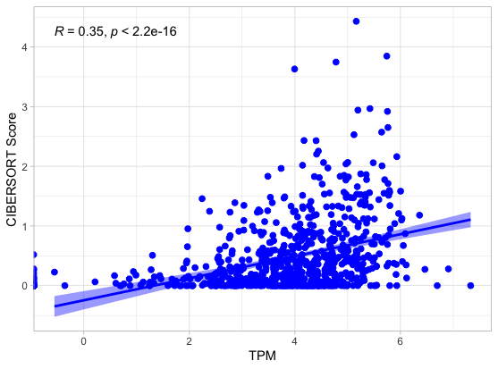
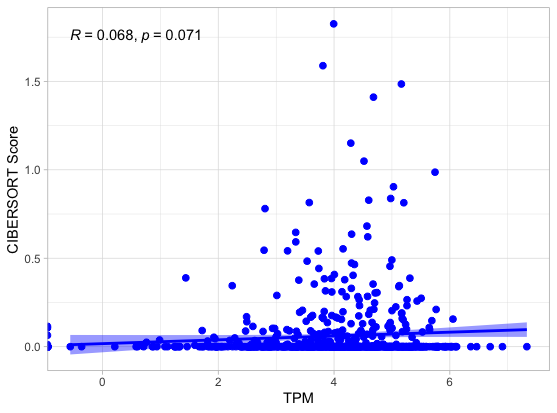
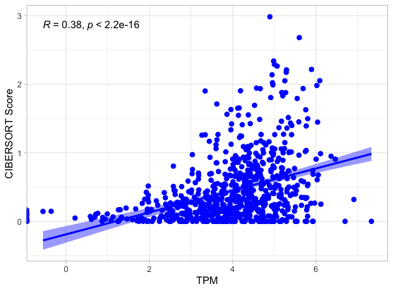
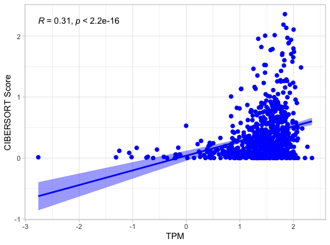
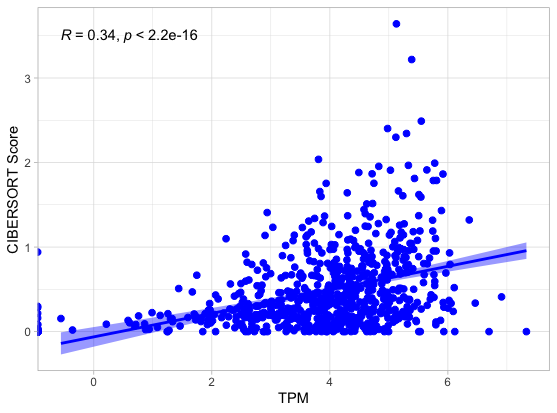
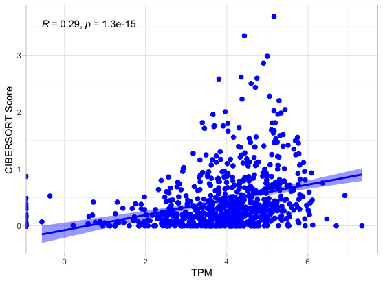
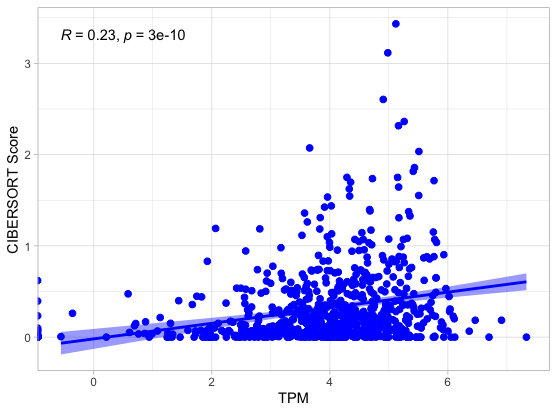
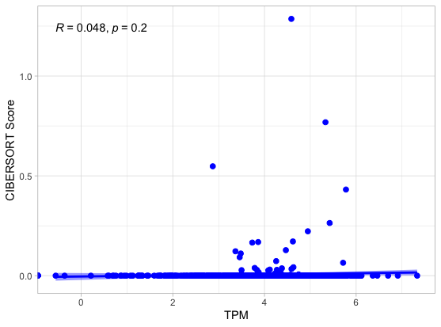
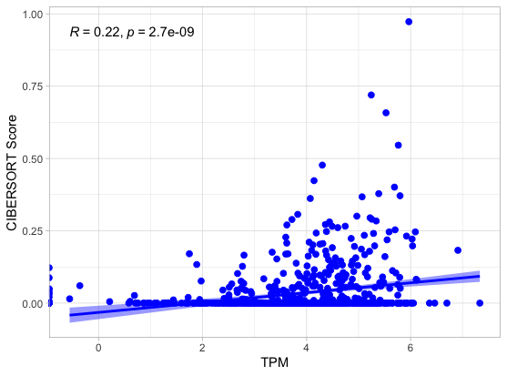

A Appendix
A.1 Pathways Analysis
Figure A.1: GSEA analysis for Hallmark gene set for high CD4+ memory activated infiltration samples vs low CD4+ memory activated infiltration samples
Figure A.2: GSEA analysis for Hallmark gene set for high CD4+ naive infiltration samples vs low CD4+ naive infiltration samples
Figure A.3: GSEA analysis for Hallmark gene set for high CD4+ resting infiltration samples vs low CD4+ resting infiltration samples
Figure A.4: GSEA analysis for Hallmark gene set for high CD8+ infiltration samples vs low CD8+ infiltration samples
Figure A.5: GSEA analysis for Hallmark gene set for high M0 infiltration samples vs low M0 infiltration samples
Figure A.6: GSEA analysis for Hallmark gene set for high M1 infiltration samples vs low M1 infiltration samples
Figure A.7: GSEA analysis for Hallmark gene set for high M2 infiltration samples vs low M2 infiltration samples
A.2 Correlation Analysis
A.2.1 Dave
CIBERSORT Score vs STING TPM Count Correlation for Dave Dataset for CD4+ memmory resting, T cell gamma delta, M0, M1, M2, T cell CD8+, T cell memory activated, T cell naive, T regulatory cells (top to bottom)
        


.png)